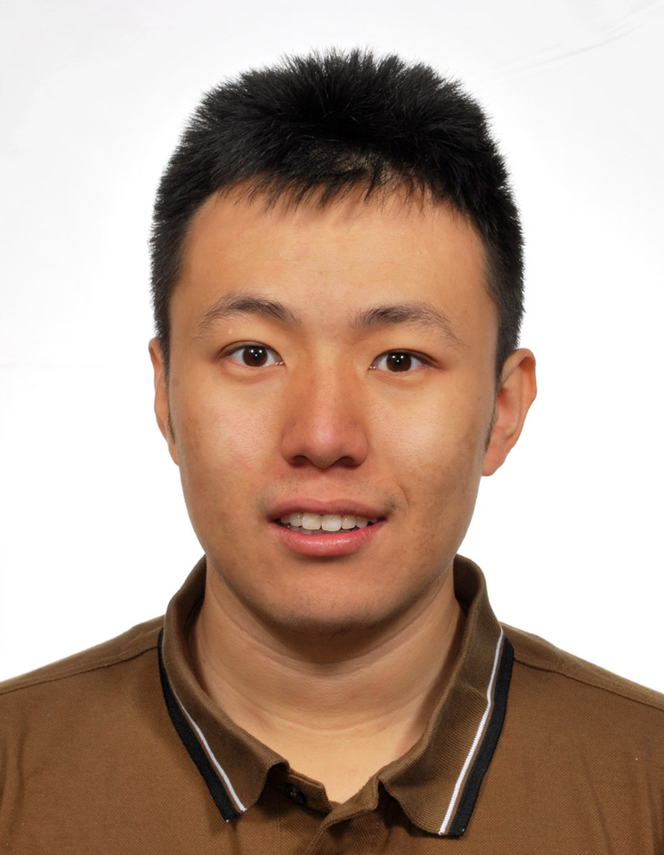
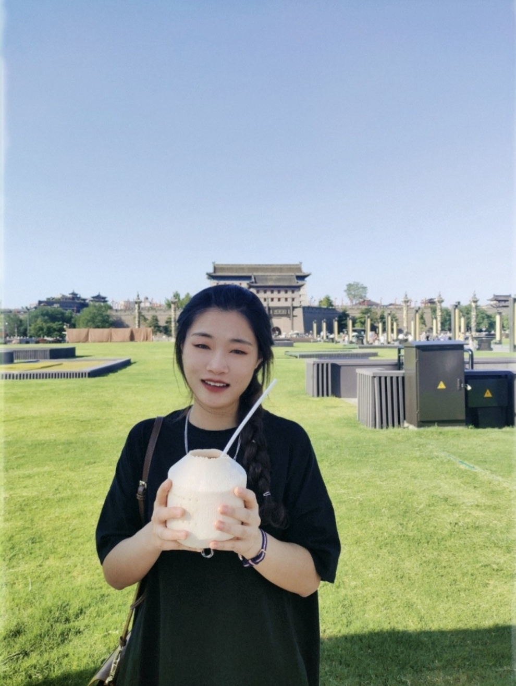
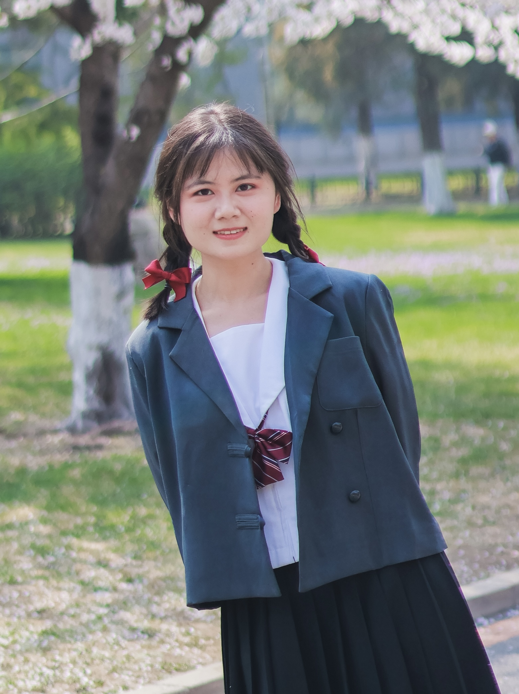

Faculty

He Sun is an assistant professor in the National Biomedical Imaging Center (NBIC) at Peking University. His research primarily focuses on computational imaging and adaptive optics, which tightly integrates optics, control, signal processing and machine learning to design more capable scientific imaging instruments. Prior to joining the Peking University faculty in 2022, He was a postdoctoral researcher and Amazon AI4Science Fellow at California Institute of Technology, where he was hosted by Katie Bouman. He obtained his Ph.D. from Princeton University in 2019 (advised by N.Jeremy Kasdin and Robert Vanderbei) and his bachelor’s degree from Peking University in 2014. His past work has contributed to interdisciplinary science missions, including the Event Horizon Telescope for black hole interferometric imaging and space telescope missions for exoplanet direct imaging.
PhD Students
Shaochi Ren

Enze Ye
Weimin Bai
Master Students

Yaqing Xu

Huanyu Yang
Undergraduate Students
Xiangyi Wang